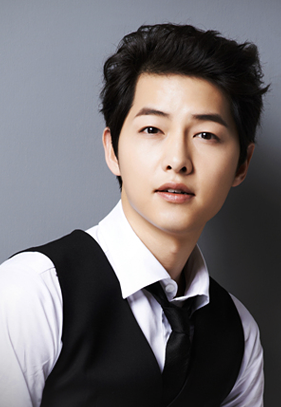

宋仲基

基本介绍
1985年9月19日出生于韩国大田广域市，韩国演员、主持人。2008年出演电影《霜花店》进入演艺圈。2009年在音乐节目Music Bank中担任主持，后在艺能节目《Running man》中担任固定嘉宾（E01——E41）。2010年出演电视剧《成均馆绯闻》具龙河一角，获得KBS演技大赏最佳人气奖。2011年在电视剧《树大根深》中饰演青年世宗，获得SBS演技大赏PD奖。2012年接拍KBS水木剧《善良的男人》，在KBS演技大赏中获得最佳男演员奖、网络人气奖及最佳情侣奖。同年主 ... >>>
早年经历
宋仲基于1985年9月19日出生于韩国大田广域市，是家中的二儿子，家中还有一兄一妹。宋仲基在小学时期就读于大田圣母小学，初中时期就读于大田中学，从小学到初中二年级一直是大田代表队的短道速滑选手，有6年作为大田广域市的代表选手，并参加过三次全国体育大会。后来因为脚腕负伤才中途放弃，转攻学业。经过努力，升入初三的宋仲基成为副班长和学生会会长。
宋仲基的高中时期就读于南大田高等学校。进入高中后，宋仲基在高一时被表彰为模范生，高二是学生会会长，高三时获表彰功劳奖。高三时所有科目全部是“优”，英文和数学全校第一。家里很反对他进演艺科，要求他考上非演艺科大学才能接触演艺圈。他第一年考上的并不是理想中的大学，复读一年，第二年他以成绩380分（满分400分）全国排名前十的优异成绩考上了韩国成均馆大学经营系。宋仲基在大学主修经营管理辅修新闻放送，是学校电视台的主播，新闻放送社团的团长，还是学校校刊封面模特和招生广告模特，被称为“成大校草”。
演艺经历
2016年2月24日，与宋慧乔、晋久、金智媛合作主演的KBS、TVN水木剧《太阳的后裔》首播，宋仲基在剧中饰演特战部队大尉柳时镇。该剧首播收视达14.3%，最高收视达38.8%播出后位居同时段收视冠军，并获得第52届韩国百想艺术大赏大赏。宋仲基也凭借柳时镇一角色入围第52届韩国百想艺术大赏最佳男演员奖，获得最佳人气男演员奖和爱奇艺韩流人气奖，第11届韩国电视剧大奖韩流剧集最佳男主角奖等多项奖项，摘得第六届APAN StarAwards以及KBS演技大赏最高演技大赏。同年在韩国大众文化艺术奖上被授予总统表彰。5月，在漫画改编电视剧《心里的声音》中客串。7月16日晚，“宋仲基亚洲巡回粉丝见面会2016”上海站于上海大舞台举行了该次巡回见面会的最后一站演出。7月，与黄政民、苏志燮合作，主演战争电影《军舰岛》，饰演朴武英。